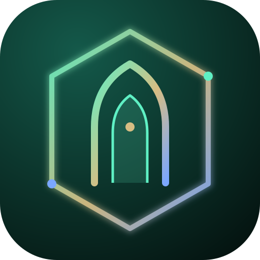

PANDUAN SHOLATBerandaMenghitung jadwal…
Setiap bacaan dilengkapi ragam riwayat, arti, dan sumber hadis. Ketuk bacaan untuk membuka.
Audio memakai suara Arab sintetis dari perangkat, bukan rekaman qari. Untuk menghafal dan memperbaiki tajwid, belajarlah langsung kepada guru.
Buka lebih cepat seperti aplikasi biasa, tampil layar penuh, dan tetap bisa dibuka saat sinyal lemah.
Aplikasi belajar sholat yang mengikuti tuntunan Nabi ﷺ (Sifat Shalat Nabi). Isinya tahapan sholat dari takbir sampai salam, tata cara wudhu dan tayammum, pembatal wudhu dan sholat, perpustakaan bacaan dengan ragam riwayat, jadwal sholat, pengingat, tips harian, dan pelacak lima sholat.
Setiap tahapan dan bacaan dicantumkan rujukannya (Al-Qur'an dan hadis). Aplikasi ini sarana belajar, bukan fatwa. Perbedaan pendapat ulama yang berdalil ditandai sebagai khilafiyah. Nomor dan derajat hadis dapat berbeda antar-edisi, jadi verifikasi sebelum dijadikan rujukan final dan belajarlah langsung kepada guru.
Tanpa akun. Progres belajar, pengingat, dan catatan sholat tersimpan di perangkat Anda. Aplikasi tidak membaca lokasi perangkat; Anda memilih kota sendiri, dan jadwal dihitung di perangkat. Jadwal memakai rumus astronomi (Subuh 20°, Isya 18°), jadi cocokkan dengan jadwal Kemenag atau masjid setempat.
Panduan Sholat 1.0 · 2026
Lihat sholat berikutnya beserta hitungan mundurnya. Pilih kota Anda pada kolom “Kota” agar jadwal sesuai. Ketuk lonceng pada sholat yang ingin diingatkan, lalu pilih waktu pengingat. Centang setiap sholat yang sudah ditunaikan untuk mengisi catatan harian dan rangkaian hari berturut-turut.
Ketuk “Aktifkan notifikasi” di Beranda lalu izinkan, kemudian ketuk “Tes notifikasi” untuk memastikan berfungsi. Pengingat berbunyi selama aplikasi terbuka atau masih berjalan di latar belakang; bila aplikasi ditutup sepenuhnya, pengingat tidak dapat muncul. Di iPhone/iPad, pasang dulu ke Layar Utama. Jika notifikasi diblokir, izinkan lewat pengaturan situs di browser.
Pilih Wudhu, Tayammum, atau Pembatal. Wudhu dan tayammum tampil satu langkah per kartu: ketuk “Lanjut” atau titik di atas kartu untuk berpindah. Pada Pembatal, ketuk judul untuk membuka penjelasan dan dalilnya.
Geser deretan tahapan di atas dan pilih satu tahap. Buka bagian “Tata cara” untuk gerakan, lalu pelajari bacaannya. Bila ada beberapa riwayat, ketuk angka 1, 2, 3… untuk berganti ragam. Tandai “Selesai” untuk mencatat progres Anda.
Tab Bacaan memuat semua bacaan sholat lengkap dengan Arab, latin, arti, dan sumber. Tombol “Dengarkan” hanya muncul bila perangkat memiliki suara Arab. Suaranya sintetis, bukan rekaman qari.
Ketuk ikon ⓘ di samping tombol tema untuk membuka halaman ini. Ketuk sekali lagi untuk kembali ke halaman sebelumnya.
Ketuk “Instal” di bagian atas atau di halaman ini, lalu setujui. Di iPhone/iPad, ketuk ikon Bagikan di Safari lalu pilih “Tambah ke Layar Utama”. Pemasangan memerlukan alamat https (misalnya GitHub Pages atau Vercel), bukan file yang dibuka langsung.
“Sholatlah sebagaimana kalian melihat aku sholat.”
Buka sumber ↗ HadisShahih Muslim 490Perintah bersujud di atas tujuh anggota tubuh.
Buka sumber ↗ Al-Qur'anQS. Al-Ma'idah 5:6Dasar wudhu dan tayammum.
Buka sumber ↗ Al-Qur'anQS. An-Nisa' 4:103Sholat memiliki waktu yang ditentukan.
Buka sumber ↗Materi ini kerangka belajar, bukan fatwa. Nomor dan derajat hadis dapat berbeda antar-edisi, verifikasi sebelum dijadikan rujukan final. Perbedaan pendapat ulama yang berdalil dicantumkan sebagai khilafiyah; ikuti bimbingan guru tepercaya. Jadwal dihitung dengan rumus astronomi (Subuh 20°, Isya 18°); cocokkan dengan jadwal Kemenag atau masjid setempat.